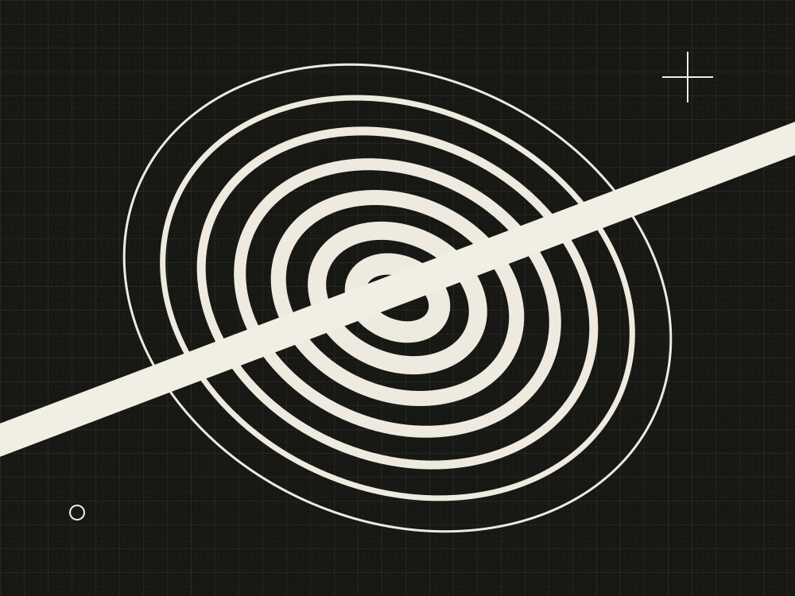

折返 / RETURN
一条线偏离原本的路径，再回到纸面。明黄、黑色与一小块暖白，把注意力留给形状之间的关系。
给熟悉的事物，
留一点陌生。AN EXHIBITION
OF SMALL THINGS


以下作品与展览叙述均为原创概念，
用于演示艺术编辑与信息组织。
一条线偏离原本的路径，再回到纸面。明黄、黑色与一小块暖白，把注意力留给形状之间的关系。
连续的圆环被一道光带切开。黑白的尺度变化，让相同的几何结构拥有不同的观看顺序。
两幅作品保持相近比例，以明黄和黑白形成张力。左边强调实体与转折，右边强调光与连续性。页面保留同一条基线，让差异显得有秩序。
替换为有权使用的作品，补齐作者、作品信息、实际日期、场地与观看方式，再连接真实的预约或售票系统。本演示不提供交易入口。
借鉴图鉴中艺术双联画、跨图标题与策展目录的组织方法。两幅几何作品以原生SVG创作，不使用参考品牌的作品、标志或照片。